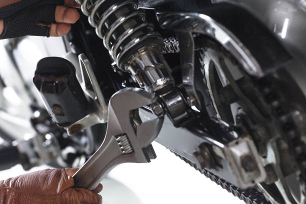
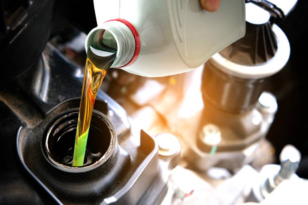
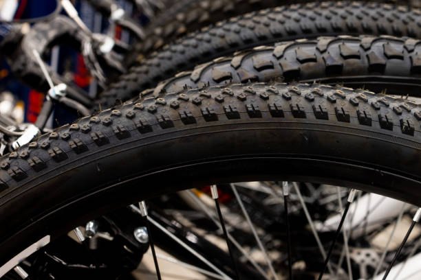
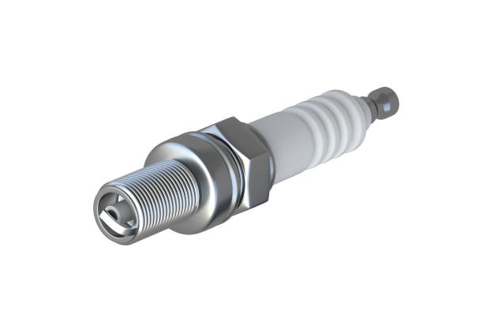
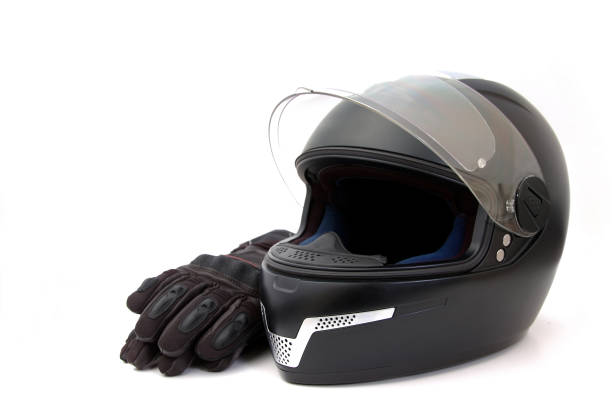

Réparation moto
Diagnostic, moteur, freins, suspensions et remise en route.
Atelier moto à Sanankoroba
Diagnostic rapide, interventions soignées et conseils clairs pour les motos Haojin, Djakarta, Apsonic et autres marques courantes.
Nos interventions

Diagnostic, moteur, freins, suspensions et remise en route.

Huile adaptée, lubrification et contrôle général.

Nettoyage, graissage et réglage de chaîne.

Remplacement, pression, adhérence et vérification de l'usure.

Pièces utiles pour une combustion propre et un démarrage fiable.

Casques, protections et équipements pratiques pour rouler mieux.
A l'atelier
Vous expliquez le problème, nous contrôlons les points importants, puis nous proposons l'intervention adaptée avant de commencer.
Lire les conseils d'entretienConseils
Vidange, freins, pneus, chaîne et batterie : les bons gestes pour prolonger la durée de vie de votre moto.
Lire les conseilsServices
Moteur, suspensions, freins, pneus, bougies et accessoires disponibles selon vos besoins.
Voir les servicesAdresse
Contact
Passez à l'atelier ou appelez-nous avant votre visite.